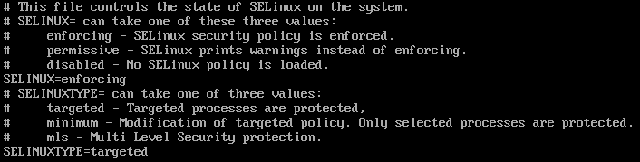

Linux study notes
Linux has two main branches: Debian and RedHat. Debian is meant for personal use, with a popular example Ubuntu. RedHat is meant for server use, with a popular example of CentOS. I'm going to learn the basics of servers, so the distro of interest here will be CentOS. The reference of this note is this video course. This course is intent for server setup.
I. Virtual Machine
I used to think only when I have many computers can I test out a server. In fact, it only requires a virtual machine, or several virtual machines. I've already set up VMware on my laptop.
A. First login
A fresh CentOS only has one user: root. Set all password to 123456, which is not sensitive and easy to remember.
B. IP address and internet
The first thing to do on a minimal operating system is to set up its network, i.e. the ip address. CentOS does not have a graphical interface to set ip address, but this can be done by editing /etc/sysconfig/network-scripts/ifcfg-ens33.

There are 4 things:
- Delete the
UUID=...line (I don't know why) - Set
BOOTPROTO=static, this makes the system not to automatically configure the network settings, so that our configurations can stay. - Set
ONBOOT=yesto apply configurations on boot. - Set
IPADDR,NETMASK,GATEWAYandDNS1:
IPADDR: ip address, has to be in the same ip band (IPADDR*NETMASK), the last digit must not be 0, 1 or 255. Safe choice would be anything in 100-200.NETMASK: 255.255.255.0 (can this be different?)GATEWAY: this has to be consistent with the virtual machine net work settings.DNS1: 114.114.114.114 (any other DNS?). When DNS is set, some domain name and ip addresses are linked, so that we do not have to remember the dry ip address, but can use juicier name instead. For example, I can ping the ESPCI domain name withping espci.frand get the following result
C. Virtual network editor
Virtual network editor in VMware shows the subnet IP address of the virtual machine.

We can customize our subnet IP address and uncheck the DHCP service, since we are going to set up a static IP.

We should also click on the NAT settings to check the gateway IP.

In this case it's 192.168.118.2
D. Set up config file in virtual machine
The directory is /etc/sysconfig/network-scripts/ifcfg-ens33. We use vi to edit the file. The original file is like the following.

We will change ONBOOT to yes, BOOTPROTO to static, then add IPADDR, NETMASK, GATEWAY and DNS1. The following is the edited file.

Then restart the network service by systemctl restart network.service. Now we can ping baidu and google to test the network:

E. Disable Linux firewall
systemctl status firewalld: query the status of firewallsystemctl disable firewalld: from next login, disable the firewall permanentlysystemctl stop firewalld: make firewall inactive now. Note that if thedisablecommand is not used, firewall will restart at the next login.
F. Remove software install restriction
vi /etc/selinux/config

Set SELINUX to disabled.
II. Text file operation
A. more and less
Load one page, allow user to move to other pages. Press h to see the commands. less has more powerful commands but is mostly the same as more.
B. head and tail
Use -n to specify how many lines in the head or the tail of the file.
head -10 /etc/profile
displays the first 10 lines of file profile.
A very useful function of tail is to monitor the change of a file in real time, such as a system log.
tail -f xxx.log tail -F xxx.log
The difference is -f monitors the inode, while -F monitors the file name.
C. >>
Write output into a file
ping www.baidu.com >> baidu
saves the result of ping to file baidu.
echo 1234 >> example.txt
D. vi notes
vi +n xxx: open xxx and put cursor at nth lineIandA: insert / append in the beginning or the end of a line.
III. File transfer
A. Windows to Linux: lrzsz
Light weight uploading and downloading.
B. Linux to Linux: scp
scp src tar: copy from src to tar
- if either
srcortaris on another computer, useuser@ip.addr.of.pc:/path/to/file - transfer from one computer to another, using a third computer is possible by typing, but input password twice is a bit awkward...
scp root@192.168.118.101:/root/test root@192.168.118.102:/root
IV. File system commands
A. df and du
df: partition information-h: human readable information
du: specified file size--max-depth: depth of search
B. compress and decompress
.tar.gz: most linux compressed files are in this formattar -zxvf filename: extract.tar.gz,zxis decompress,vis verbose andfis file.tar -zcvf target_file source_file: compresssource_fileintotarget_file,zcis compress
zipandunzip- need installation with
yum zip -r target sourceunzip filename
- need installation with
V. Network
A. Some frequently used network commands
ifconfig: network configurationnetstat: connection statusping: ip connectiontelnet: can connect to specific port?curl: get info from given address
B. Login without password - ssh key file
- Generate rsa keys
ssh-keygen -t rsa -P '' -f ~/.ssh/id_rsa
On Windows system, use
ssh-keygen -t rsa -f .ssh\id_rsa
because -P '' will set '' as a key-phrase, which will be required every time when logging into the target hosts. After this command, you will be prompted to enter a key-phrase, press enter to set no key-phrase.
2. Send the pub key to target hosts.
ssh-copy-id -i ~/.ssh/id_rsa.pub root@node1
This will automatically create the file ~/.ssh/authorized_keys and copy the string in id_rsa.pub to it.
Alternatively, you can manually create the file ~/.ssh/authorized_keys and copy the key.
- When using
ssh, we typically usessh user@ip.address, ifuseris omitted, the local username will be used. Below is an example, where "root" is assumed to be the username on the target host.
[root@basenode ~]# ssh node2 Last login: Thu Jan 13 16:00:49 2022 from 192.168.118.100 [root@node2 ~]# _